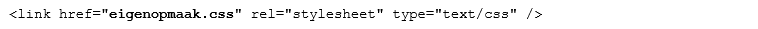
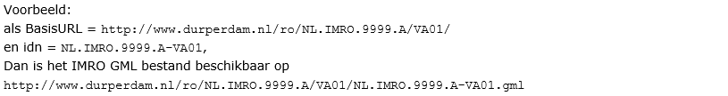

Creative Commons Attribution 4.0 International Public License (CC-BY)
Status van dit document
Deze paragraaf beschrijft de status van dit document ten tijde van publicatie. Het is mogelijk dat er actuelere versies van dit document bestaan. Een lijst van Geonovum publicaties en de laatste gepubliceerde versie van dit document zijn te vinden op https://www.geonovum.nl/geo-standaarden/alle-standaarden.
Dit is de definitieve versie van de praktijkrichtlijn. Wijzigingen naar aanleiding van consultaties zijn doorgevoerd.
Dit is de definitieve versie van de praktijkrichtlijn. Een praktijkrichtlijn is een product dat informatie geeft, vaak met een technisch karakter, dat nodig is voor het toepassen van een standaard. Een praktijkrichtlijn hoort altijd bij een standaard/norm.
PRTRI2012-v1.4.2
Versiebeheer
Dit document is aan verandering onderhevig. Het versiebeheer van het document
geeft inzicht in wijzigen en de actualiteit ervan.
Versie
Datum
Status
Aanpassing
1.0
1 januari 2012
Vervallen
Eerste versie
1.1
15 november 2012
Vervallen
Tekstuele correcties in paragraaf 5.4, 5.5 en 5.7;
1.2
19 mei 2014
Ter publieke consultatie
- In Hoofdstuk 1 is een verwijzing naar de werkafspraak 'Beveiligingseisen beschikbaar stellen ruimtelijke instrumenten' opgenomen;
- Aanvulling van paragraaf 5.7: instrumenten die wel en geen beroepsprocedure kennen;
- Paragraaf over ondergronden toegevoegd als 7.2;
- Bijlagen toegevoegd:
- Bijlage 1 toelichting op de toevoeging voor paragraaf 5.7;
- Bijlage 2 werkwijze rechterlijke uitspraken. Hiermee komt de separate publicatie van deze werkwijze te vervallen;
- Bijlage 3 toelichting ondergronden voor paragraaf 7.2.
1.2.1
20 augustus
Vervallen
Naar aanleiding van de publieke consultatie kleine tekstuele correcties in paragraaf 5.7 en Bijlage 2, dan wel voetnoot toegevoegd. Zie rapport consultatie.
1.3
8 oktober
Vervallen
Naar aanleiding van wijziging STRI2012 ten behoeve van IMWE is de praktijkrichtlijn aangevuld op de volgende punten voor welstandsnota:
- Hoofdstuk 1;
- Paragraaf 4.1, 4.2, 5.4, 5.5, 5.7 (incl. Figuur 3), 7.1 en 7.2;
- Bijlage 1.
De verwijzing naar de SVBP is aanpast in paragraaf 7.1.
In Bijlage 2 is de leeswijzer aangevuld en in Bijlage 3 is de toelichting op ondergronden nader uitgelegd.
1.3.1
3 december 2014
Vervallen
De consultatie van de werkversie bij BROS en softwareleveranciers heeft een aanpassing opgeleverd van Figuur 3: welstandsnota kent wel de planstatus vastgesteld, maar niet de dossierstatus vastgesteld.
1.4
oktober 2015
Werkversie
- Paragraaf 5.4 aangepast naar aanleiding van XSLT-transformatie.
- Inconsequent gebruik van planstatus geconsolideerd: Paragraaf 5.5 aangepast voor wat daar waar ‘geconsolideerde versie’ werd gebruikt dit vervangen door ‘versie geconsolideerd’.
- Verwijderen van ‘planstatus: vastgesteld en dossierstatus: deels onherroepelijk in werking’ en toevoegen van ‘oorspronkelijk’ in Bijlage 2 – Werkwijze gerechtelijke uitspraken paragraaf 2.5.
- Bijlage 3(kop); Rujimtelijkeplannen.nl vervangen door Ruimtelijkeplannen.nl.
14 december 2015
Definitief
Besproken met BROS en softwareleveranciers; wijzigingen definitief.
1.4.1
September 2017
Werkversie
- Paragraaf 7.2 en Bijlage 3 aangepast in verband met verplicht gebruik BGT en verwijderen GBK
25 oktober 2017
Definitief
1.4.2
20 september 2018
Werkversie
- Paragraaf 5.4 aanpassen voor het gebruik van PDF bestanden zonder Flashcompnenten.
23 oktober 2018
Definitief
1. Inleiding op de PRTRI2012
In dit inleidende hoofdstuk is het kader gegeven waarbinnen de Standaard
Toegankelijkheid Ruimtelijk Instrumenten gebruikt wordt.
In de Wet ruimtelijke ordening (Wro) is vastgelegd dat planologische visies,
plannen, besluiten, verordeningen, algemene maatregelen van bestuur en
onderliggende ministeriële regelingen digitaal vervaardigd en op elektronische
wijze beschikbaar gesteld moeten worden. Daarnaast is ook in de Wet algemene
bepalingen omgevingsrecht (Wabo) een verplichte elektronische
beschikbaarstelling opgenomen voor sommige gevallen. Welstandsnota’s mogen op
vrijwillige basis digitaal vervaardigd en beschikbaar gesteld worden. Om dit
mogelijk te maken zijn de RO standaarden ontwikkeld. De Standaard
Toegankelijkheid Ruimtelijke Instrumenten (STRI2012) is één van de standaarden
uit dit samenhangende pakket. Het voorliggende document vormt een toelichting op
de STRI2012.
De STRI2012 is vooral bedoeld voor leveranciers van software en elektronische
infrastructuur voor de ondersteuning van het RO proces, en voor ICT medewerkers
van de bronhouders van ruimtelijke instrumenten, maar niet zo zeer voor de RO
medewerkers, de eindgebruikers van de RO standaarden, zelf. In de praktijk van
de ruimtelijke ordening zullen veel zaken die hier expliciet worden beschreven
ingebed zijn in software of processen. Deze toelichting heeft een algemener
karakter en heeft een verklarend doel ten opzichte van de normen.
De STRI2012 is van toepassing op de volgende ruimtelijke instrumenten:
bestemmingsplan;
rijksbestemmingsplan;
inpassingsplan;
structuurvisie;
beheersverordening;
voorbereidingsbesluit;
aanwijzingsbesluit (proactieve aanwijzing);
reactieve aanwijzing;
provinciale verordening;
algemene maatregel van bestuur;
ministeriële regeling;
exploitatieplan;
omgevingsvergunning[^1];
gerechtelijke uitspraak;
welstandsnota (niet verplicht).
[^1]: Het betreft hier de omgevingsvergunning als bedoeld in artikel 2.12
eerste lid, onder a, sub 3e van de Wabo
De opbouw van deze praktijkrichtlijn is identiek aan de opbouw van de STRI2012.
Ieder hoofdstuk in deze praktijkrichtlijn vormt een toelichting op het
corresponderende hoofdstuk in de STRI2012.
Voor STRI2012 geldt sinds januari 2014 de werkafspraak dat bronhouders van
ruimtelijke instrumenten de manifesten en plannen voortaan alleen publiceren via
poort 80 voor HTTP verkeer of poort 443 voor HTTPS verkeer. Vanaf publicatie van
deze werkafspraak tot het tijdstip van inwerkingtreden van vernieuwde RO
Standaarden of omgevingstandaarden dan wel nader bericht van de beheerder van de
RO Standaarden geldt deze werkafspraak, die beschikbaar is via de Geonovum
website[^2].
Ieder ruimtelijk instrument is opgebouwd uit een samenhangende set onderdelen.
Ieder onderdeel bestaat uit één of meerdere bronbestanden. In dit hoofdstuk
worden de eisen aan de mogelijke samenstelling van onderdelen en bronbestanden
toegelicht.
Ieder ruimtelijk instrument bestaat uit een aantal onderdelen. Deze worden
beschikbaar gesteld als bronbestanden. Het ruimtelijk instrument bestaat
uiteindelijk dus uit een samenhangende set bronbestanden. In tabel 1 en tabel 2
van de STRI2012 wordt een overzicht gegeven van welke onderdelen beschikbaar
zijn voor de verschillende typen ruimtelijke instrumenten.
Ruimtelijke instrumenten worden als “open data” voor een ieder beschikbaar
gemaakt via het internet zonder kosten en zonder technische of procedurele
belemmeringen.
Burgemeester en wethouders, gedeputeerde staten en de verantwoordelijke minister
of ministers (hierna aangeduid als bronhouder) zijn verantwoordelijk voor de
inhoudelijke correctheid van de informatie.
De bronhouder verzorgt de toegankelijkheid en vindbaarheid van de eigen
informatie en is verantwoordelijk voor een goede en zo veel mogelijk doorlopende
beschikbaarheid hiervan via het internet.
Uitspraken van de Raad van State en gerechtelijke uitspraken met betrekking tot
beschikbaar gestelde ruimtelijke instrumenten worden door de bronhouder niet
verwerkt in de ruimtelijke instrumenten zelf, maar worden door de bronhouder van
het instrument beschikbaar gesteld naast het instrument. De Raad van State en de
rechtbanken zijn zelf geen bronhouder.
3. Bestandstype
In dit hoofdstuk is toegelicht welke bestandsformaten per bestandstype kunnen
worden gehanteerd.
In Hoofdstuk 3 van de STRI2012 wordt per bestandstype aangegeven wat de
toegestane bestandsextensies en MIME types zijn. In de STRI2012 wordt niet exact
aangegeven welke bestandsformaten zijn toegestaan voor ieder bestandstype. Dit
is het gevolg van de bredere adoptie van open standaarden binnen de overheid,
waar het College en Forum Standaardisatie een adviserende rol in spelen. Het
Forum en College Standaardisatie publiceren en onderhouden een lijst met
aanbevolen en verplichte open standaarden die voor de gehele (semi-)publieke
sector van toepassing is[^3]. Met het toepassen van de RO Standaarden volgt dan
ook de toepassing van deze lijst. Als de lijst met open standaarden wordt
toegepast op de bestandstypes die voorgeschreven zijn in de STRI2012, dan zijn
daarmee de bestandsformaten toegestaan zoals benoemd in Tabel 1.
Ieder ruimtelijk instrument kent een eigen identificatienummer (idn). In dit
hoofdstuk is toegelicht hoe de opbouw van dit idn is. Tevens zijn in dit
hoofdstuk de eisen voor de bestandsnamen toegelicht.
4.1 Identificatienummer
Ieder ruimtelijk instrument kent een eigen identificatienummer (idn). Deze
identificatie maakt het mogelijk dat op landelijk niveau een uniek onderscheid
voor ieder instrument aanwezig is. Voor de invulling hiervan wordt eerst
vermeld: "NL.IMRO." of “NL.IMWE” indien het een Welstandsnota betreft,
vervolgens wordt het CBS-nummer van de bronhouder opgenomen (voor het Rijk:
0000), gevolgd door een punt (.) en aansluitend een unieke naam van maximaal 18
tekens, een koppelteken, ASCII 45 (-) en een versiecode van maximaal 4
alfanumeriek tekens, beide laatstgenoemde door de bronhouder te bepalen. De
versiecode is uniek voor alle versies die extern gepubliceerd zijn. De
versiecode wordt altijd aangepast indien er sprake is van een nieuwe planstatus,
bijvoorbeeld van voorontwerp naar ontwerp of van ontwerp naar vastgesteld, maar
ook als er binnen één planstatus meerdere versies extern worden gepubliceerd.
De totale lengte van het idn bedraagt maximaal 36 tekens. Voor het geval het
werkingsgebied bestaat uit meerdere ruimtelijk gescheiden gebieden kent het
totaal van die gebieden één identificatienummer. De geometrie van het object is
hierbij een multipolygoon.
Voorbeelden van geldige (maar wel fictieve) idn's: NL.IMRO.1234.A-0001 NL.IMRO.5678.centrumgebied-0012 NL.IMRO.1111.structuurvisie2012-AD12 NL.IMWE.5678.Welstandsnota2014-VG01
Het gedeelte van het identificatienummer tot aan het liggend streepje wordt het
dossiernummer genoemd. Dit wordt van belang in Hoofdstuk 5.
Voorbeelden van geldige (maar wel fictieve) dossiernummers: NL.IMRO.1234.A NL.IMRO.5678.centrumgebied NL.IMRO.1111.structuurvisie2012 NL.IMWE.5678.Welstandsnota2014
4.2 Bestandsnaam vereisten
Voor ieder onderdeel van ieder ruimtelijk instrument worden eisen gesteld aan de
bestandsnaam van het bronbestand. De bestandsnaam kent de volgende opbouw:
Voor alle onderdelen behalve het IMRO / IMWE GML begint de bestandsnaam met
een aanduiding van het type onderdeel als één of twee karakters zoals
gegeven in tabel 1 en tabel 2 van de STRI2012, gevolgd door een underscore
(_);
Vervolgens het identificatienummer van het instrument;
Voor bijlagen en illustraties vervolgens een underscore (_) gevolgd door een
nadere tekstuele extensie van maximaal 20 alfanumerieke tekens, te bepalen
door de bronhouder;
Tot slot een punt (.) en de bestandsnaamextensie zoals gegeven in tabel 3
van de STRI2012.
De totale maximale lengte bedraagt daarmee 65 karakters. Bijlagen en
illustraties zijn voorzien van een nadere tekstuele extensie, omdat er bij deze
onderdelen meerdere bestanden kunnen worden geleverd, conform tabel 1 en tabel 2
van de STRI2012. Omwille van de eenduidigheid is er voor gekozen om deze
tekstuele extensie altijd toe te voegen, ook als er slechts één illustratie of
bijlage beschikbaar wordt gesteld.
Voorbeelden van geldige (maar wel fictieve) bestandsnamen: NL.IMRO.1234.A-0001.gml vb_NL.IMRO.5678.centrumgebied-0012.html b_NL.IMRO.1111.structuurvisie2012-AD12_bijlage.pdf pt_NL.IMWE.5678.Welstandsnota2014.xml
5. Beschikbaar stellen
De bronbestanden van ieder ruimtelijk instrument moeten beschikbaar worden
gesteld door de bronhouder. In dit hoofdstuk worden de eisen voor deze
beschikbaarstelling toegelicht, inclusief inhoud en opbouw van het manifest en
geleideformulier, dat hier een belangrijk onderdeel van is.
5.1 Eisen aan de beschikbaarstelling
Ruimtelijke instrumenten worden door gemeente, provincie of Rijk beschikbaar
gesteld op internet. Omdat ieder ruimtelijk instrument bestaat uit een
samenhangende set van bronbestanden die samen het instrument vormen, bestaat het
feitelijke proces van beschikbaar stellen er uit dat deze bestanden op een
webserver worden geplaatst die via een vast webadres (URL) benaderbaar is via
het internet.
Alle bronbestanden van een enkel instrument worden binnen één virtuele directory
beschikbaar gesteld die door de bronhouder zelf gekozen kan worden. Er wordt
daarbij gewerkt met relatieve URL's (bijvoorbeeld bij de illustraties in HTML of
de verwijzingen naar de onderdelen in het geleideformulier). Hierdoor blijven de
bronbestanden bruikbaar indien deze in zijn geheel in een andere
raadpleegomgeving wordt gebruikt.
Bijvoorbeeld, als een instrument met idn NL.IMRO.1111.visie2012-0012 beschikbaar
gesteld wordt in de virtuele directory:
Beschikbaar stellen van elementen binnen een andere virtuele directory of in een
subdirectory binnen de virtuele directory is niet toegestaan. Het is dus niet
toegestaan het GML bestand bijvoorbeeld als volgt beschikbaar te stellen
(foutieve elementen onderstreept
en in rood):
is dus toegestaan. De index.htm pagina is dus geen onderdeel van het ruimtelijk
instrument zelf, maar wordt in dit voorbeeld gebruikt voor de inrichting van de
informatievoorziening door de bronhouder.
5.2 Periode van beschikbaarheid
De bronbestanden van iedere beschikbaar gestelde versie van een ruimtelijk
instrument blijven toegankelijk totdat een instrument onherroepelijk in werking
is getreden of is vervallen. Dit is vastgelegd in het Besluit ruimtelijke
ordening (Bro). Voor instrumenten waar beroep tegen mogelijk is, is dit het
geval ofwel nadat de beroepstermijn is afgelopen en er geen beroep is ingesteld,
ofwel nadat de beroepsprocedure is afgerond. Voor instrumenten waar geen beroep
tegen mogelijk is, is dit het geval nadat het besluit is vastgesteld. Op dat
moment blijven in elk geval de actuele versie van het instrument en alle
eventuele reactieve aanwijzingen en gerechtelijke uitspraken beschikbaar.
Eerdere versies mogen op dat moment worden verwijderd uit het Manifest en van
internet, maar dit is geen verplichting. Pas als een instrument vervallen is,
mag het in zijn geheel worden verwijderd uit het Manifest en van internet. Los
van het feit of de stukken wel of niet beschikbaar blijven via het Manifest, is
in vrijwel alle gevallen de Archiefwet van toepassing op deze stukken.
5.3 Werkwijze bij het beschikbaar stellen
Bij het beschikbaar stellen van een ruimtelijk instrument hoort een bepaalde
werkwijze. Allereerst zal het ruimtelijk instrument elektronisch worden
gewaarmerkt. Vervolgens worden alle bronbestanden op internet beschikbaar
gemaakt, en wordt het Manifest aangepast en vervolgens ook gewaarmerkt. Tot slot
moet het al op internet beschikbaar gestelde Manifest vervangen worden door het
gewijzigde Manifest, en wordt ook de digitale verbeelding bijgewerkt. Dit
laatste gebeurt overigens veelal in geautomatiseerde systemen, zoals bij de
landelijke voorziening RO[^13]. Daarna is het ruimtelijk instrument voor een
ieder beschikbaar, raadpleegbaar en via het Manifest ook vindbaar. De werkwijze
is weergegeven in Figuur 1. [^13]
:Zie: http://www.ruimtelijkeplannen.nl/
Figuur 1 Primair proces beschikbaar stellen
Een ruimtelijk instrument kan in de totstandkoming diverse statussen doorlopen.
Voor een aantal formele versies is het beschikbaar stellen wettelijk vereist.
Voor alle overige versies is beschikbaar stellen mogelijk, maar niet verplicht.
5.4 Beschikbaar stellen van opmaakbestanden
De opmaak van planteksten wordt voor een belangrijk deel niet in de plantekst
zelf geregeld maar in een apart opmaakbestand. Voor niet-objectgerichte
planteksten in HTML- en/of PDF-formaat geldt dat de bronhouder een eigen CSS
stylesheet (opmaakbestand) kan mee sturen met de plantekstbestanden. De
Landelijke Voorziening Ruimtelijkeplannen.nl zal bij de verbeelding gebruik
maken van het opmaakbestand en daarmee de huisstijl van de bronhouder toepassen.
Ook derden kunnen van dit opmaakbestand gebruik maken. Gebruik van PDF-bestanden Indien er PDF-bestanden worden gebruikt in een planset dan is het beter om PDF-
bestanden te gebruiken die geen flashcomponenten bevatten. Bestanden met
flashcomponenten kunnen om veiligheidsredenen niet meer in een webbrowser worden
geopend waardoor de PDF-bestanden bij raadpleging van Ruimtelijkeplannen.nl geen
inhoud bevatten. Controleer daarom vóór publicatie dat uw PDF-documenten geen Flashcomponenten
bevatten.
Voor objectgerichte planteksten in XML-formaat volgens de IMROPT2012-standaard
is er vanaf versie 2.2.10 van Ruimtelijkeplannen.nl landelijk één standaard
layout en presentatie. w. Kenmerk van objectgericht werken is dat vorm en inhoud
gescheiden zijn. Bronhouders kunnen nog wel een opmaakbestand (.CSS) meeleveren
voor gebruik door derden maar Ruimtelijkeplannen.nl zal hier geen gebruik van
maken. Ten behoeve van het weergeven van objectgerichte XML planteksten wordt gebruik
gemaakt van 2 soorten opmaakbestanden:
XSL stylesheet ten behoeve van het omzetten van objectgericht XML naar HTML;
CSS stylesheet ten behoeve van de visuele opmaak van de HTML.
Een XSL stylesheet transformeert de objectgerichte plantekst van XML naar
leesbare HTML tekst. Een CSS stylesheet voegt daar een standaard layout en
presentatie aan toe. De objectgerichte planteksten worden bij Ruimtelijkeplannen.nl opgeslagen in hun
oorspronkelijke XML formaat. Pas op het moment dat de tekst geraadpleegd wordt
via de website, wordt de tekst in XML-formaat getransformeerd in HTML. Hiervoor
wordt een centraal transformatieschema gebruikt: het IMROPT2012.xsl. Dit
transformatieschema bepaalt de functionaliteit van de uiteindelijke webpagina.
Daaraan gekoppeld is er een opmaakbestand (CSS) dat de uiteindelijke opmaak van
de webpagina bepaalt en daarmee van de tekst tijdens het raadplegen. Vanaf juli
2015 wordt bij objectgerichte planteksten in Ruimtelijkeplannen.nl alleen nog
maar gewerkt met een standaard CSS bestand. Bronhouders kunnen eenmalig een
organisatielogo aanleveren dat door Ruimtelijkplannen.nl getoond zal worden in
de opmaak van de uiteindelijke web-pagina. Een handleiding is hiervoor
beschikbaar. [^14] Bij het werken met objectgerichte XML planteksten wordt gebruik gemaakt van
standaard XSL en CSS stylesheets die onderdeel zijn van de RO Standaarden[^15].
De landelijke voorziening Ruimtelijkeplannen.nl maakt van de standaard opmaak
gebruik, maar ook andere applicaties / implementaties kunnen van de standaard
opmaak gebruik maken.
[^14]: De handleiding is beschikbaar via de Ruimtelijkeplannen.nl, de besloten
omgeving voor bronhouders en via de helpdesk van Ruimtelijkeplannen.nl.
[^15]: Deze standaard XSL en CSS zijn tezamen met de rest van de andere
onderdelen van de RO Standaarden 2012 beschikbaar via de Geonovum website,
onderwerp Ruimtelijke Ordening Standaarden.
Het is nog steeds mogelijk dat een bronhouder gebruik maakt van een eigen opmaak
voor objectgerichte planteksten voor een eigen viewer. In het geval de
bronhouder gebruik gemaakt van een eigen opmaak voor objectgerichte planteksten,
kan deze meegeleverd worden maar Ruimtelijkeplannen.nl zal hier niets mee doen.
Voor het weergeven van planteksten zijn er vier mogelijkheden:
HTML planregels zonder eigen CSS opmaakbestand;
HTML planregels met eigen CSS opmaakbestand;
XML planteksten zonder eigen CSS opmaakbestand;
XML planteksten met eigen CSS opmaakbestand.
N.B. Voor welstandsnota’s zijn alleen optie 3 en 4 van toepassing.
Ad. 1. HTML planregels zonder eigen CSS opmaakbestand De niet-objectgerichte planregels zijn vastgelegd in een HTML of XHTML bestand
dat wordt opgevoerd in het geleideformulier bij het element <onderdelen>. In
het HTML bestand wordt niet verwezen naar een eigen CSS bestand en conform de
Webrichtlijnen bevat de HTML geen eigen layout en presentatie.
Ad. 2. HTML planregels met eigen CSS opmaakbestand De niet-objectgerichte planregels zijn vastgelegd in een HTML of XHTML bestand
dat wordt opgevoerd in het geleideformulier bij het element <onderdelen>.
Daarbij heeft de bronhouder een eigen CSS opmaakbestand beschikbaar gesteld voor
de layout en presentatie van deze planregels. Dit CSS bestand wordt in het
geleideformulier opgenomen bij het element <supplementen>. In het HTML bestand
wordt naar dit CSS bestand verwezen met behulp van een relatieve URL, als volgt:
In de praktijk komt het voor dat vanuit het CSS bestand wordt verwezen naar
externe bronnen, bijvoorbeeld een logo of andere externe afbeeldingen, die op
een externe URL te vinden zijn. Dit betekent dat de bronhouder er voor moet
zorgen deze externe bronnen minstens gedurende de gehele looptijd van het
ruimtelijke plan blijven bestaan. Een randvoorwaarde blijft dat de gehele inhoud
van het plan raadpleegbaar moet zijn op het moment dat deze externe bronnen niet
beschikbaar zijn. Het gaat hierbij om layout en presentatie, nooit om inhoud.
Ad. 3. XML planteksten zonder eigen CSS opmaakbestand
De bronhouder maakt gebruik van objectgerichte XML planteksten. De toelichting
en regels zijn in één XML bestand opgenomen. Dit bestand wordt in het
geleideformulier opgenomen bij het element <onderdelen>.
Wanneer de bronhouder geen eigen opmaak gebruikt, kan gebruik worden gemaakt van
de standaard opmaak XSL en CSS bestanden uit het pakket RO Standaarden 2012. De
interactieve raadpleegomgeving transformeert de XML planteksten met behulp van
de standaard XSL naar HTML teksten. In de standaard XSL wordt verwezen naar de
standaard CSS layout en presentatie. De gebruiker van de interactieve
raadpleegomgeving merkt niets van het feit dat de XML planteksten worden
getransformeerd.
De landelijke voorzienig Ruimtelijkeplannen.nl maakt ook gebruik van de
standaard opmaak. Conceptueel ziet de XSL van Ruimtelijkeplannen.nl er als volgt
uit:
Ad. 4. XML planteksten met eigen CSS opmaakbestand
De bronhouder maakt gebruik van objectgerichte XML planteksten. De toelichting
en regels zijn in één XML bestand opgenomen. Dit bestand wordt in het
geleideformulier opgenomen bij het element <onderdelen>. Daarbij heeft de
bronhouder een eigen CSS opmaakbestand beschikbaar gesteld voor de layout en
presentatie van deze planteksten. Dit CSS bestand wordt in het geleideformulier
opgenomen bij het element <supplementen>.
Ruimtelijke plannen.nl zal niets met dit CSS-bestand doen omdat deze gebruik
maakt van de standaard opmaak. De bronhouder kan het CSS-bestand bijvoorbeeld
gebruiken in een eigen viewer.
De XML planteksten worden eerst getransformeerd naar leesbare HTML met behulp
van de standaard XSL stylesheet. Op deze HTML wordt vervolgens het eigen CSS
bestand toegepast voor de layout en presentatie.
Bronhouder stelt dus bijvoorbeeld beschikbaar:
Deze twee bestanden worden als volgt in het geleidformulier opgenomen:
Bij de transformatie van de XML planteksten naar HTML wordt in de resulterende
HTML verwezen naar het eigen CSS bestand, conceptueel als volgt:

5.5 Opbouw Manifest en Geleideformulier
Het Manifest is een XML bestand dat een overzicht geeft van alle elektronisch
beschikbaar gestelde ruimtelijke instrumenten van één bronhouder. Iedere
bronhouder heeft conform de STRI2012 één actueel Manifest beschikbaar op een via
het internet toegankelijk webadres (bijvoorbeeld een webadres als
http://ro.durperdam.nl/manifest.xml). In het manifest is ordening aangebracht
met behulp van dossiers. Overigens kan er naast het STRI2012 manifest ook nog
een STRI2006 manifest beschikbaar worden gesteld door de bronhouder, omwille van
het beschikbaar stellen van IMRO2006 plannen. Dit is echter buiten de scope van
de STRI2012 en wordt daarom ook niet aangehaald.
Dossier In een dossier zijn één of meerdere ruimtelijke plannen opgenomen. Het dossier
is daarmee het ordenend element in het manifest waarbinnen alle ruimtelijke
instrumenten met een identiek dossiernummer worden geplaatst. Bij het plaatsen
van plannen in dossiers wordt de volgende stelregel gehanteerd:
Ieder ruimtelijk plan dat een zelfstandige Wro, Awb of Wabo procedure kent,
krijgt ook een eigen dossier. Dit geldt ook voor welstandsnota’s.
Gerechtelijke uitspraken komen op basis van deze stelregel in het dossier van
het bestemmingsplan (of andere ruimtelijk plan) waar zij bij horen. Wijzigingen,
uitwerkingen en omgevingsvergunningen komen ieder in een eigen dossier en
kunnen, indien dit van toepassing is, direct verwijzen naar een plan waar dit
betrekking op heeft. De verwijzing zit in het attribuut
VerwijzingNaarExternPlanInfo dat aan het plangebied van deze wijziging,
uitwerking en omgevingsvergunning is gekoppeld.
Voorbereidingsbesluiten en bestemmingsplannen kunnen in hetzelfde dossier
opgenomen worden, omdat de Wro bepaalt dat “de gemeenteraad kan verklaren dat
een bestemmingsplan wordt voorbereid”, als onderdeel van de
bestemmingsplanprocedure. In dat geval heeft het dossier de status “in
voorbereiding” met daarin het (vastgestelde) voorbereidingsbesluit en daarna ook
het plan zelf met zijn verschillende versies en mogelijke gerechtelijke
uitspraken. Overigens is het technisch gezien in alle gevallen mogelijk om
bepaalde instrumenten niet in één dossier te plaatsen. Het dossiernummer is
hierbij sturend: plannen met hetzelfde dossiernummer komen per definitie in
hetzelfde dossier, plannen met een verschillend dossiernummer komen per
definitie in verschillende dossiers terecht, maar de keuze van dossiernummer is
aan de gebruiker.
De bronhouder houdt deze status per dossiernummer bij iedere wijziging actueel.
In het Manifest zijn alle beschikbare ruimtelijk instrumenten gerangschikt per
dossier. Dit betekent dat alle plannen met hetzelfde dossiernummer conform de
betekenis in Hoofdstuk 5 van de STRI2012 gerangschikt zijn binnen een
<dossier>
element, conceptueel als volgt:
Naast het Manifest wordt bij ieder ruimtelijk instrument een geleideformulier
meegeleverd voor een gedetailleerd overzicht van het desbetreffende individuele
instrument. Ook het geleideformulier is een XML bestand. Manifest en
Geleideformulier zijn beide voorzien van een waarmerk, zie Hoofdstuk 6.
Status van een ruimtelijk instrument versus status van het Dossier
In de systematiek van beschikbaar stellen wordt als uitgangspunt gehanteerd dat
de planstatus onveranderlijk is en in IMRO / IMWE GML bestand en
geleideformulier is opgenomen. De status van het dossier is daarentegen
dynamisch en wordt alleen beschikbaar gesteld in het Manifest. De volgende
aandachtspunten zijn hierbij van belang:
Er is een onderscheid aangebracht tussen status van het ruimtelijk
instrument en de status van het dossier waar het plan binnen valt;
Ieder plan kent een (statische) planstatus die niet aan verandering
onderhevig is, en die dus ook niet gewijzigd wordt door een veranderde
dossierstatus. Een plan hoeft nooit opnieuw te worden gewaarmerkt en
beschikbaar gesteld ten gevolge van een wijziging van de dossierstatus. Alle
dynamische (proces-)informatie wordt alleen opgenomen in het Manifest;
Een versie “geconsolideerd” van een ruimtelijk instrument wordt in een
separaat dossier gepubliceerd;
De status van het instrument is vastgelegd in de IMRO / IMWE GML en het XML
geleideformulier;
Ieder plan valt binnen een dossier;
De status van het dossier is dynamisch en wordt vastgelegd en beschikbaar
gesteld in het Manifest;
Het Manifest bevat minder informatie over een instrument dan het
geleideformulier. Alleen de Naam, Datum, Id en de URL naar het
desbetreffende geleideformulier worden opgenomen;
Gerechtelijke uitspraken op het plan worden niet verwerkt in het plan,
waarmee het authentieke plan na uitspraak blijft zoals het is. Het
vastgestelde plan is daarmee het laatste plan dat beschikbaar wordt gesteld,
afgezien van een separaat dossier met een versie “geconsolideerd” waar het
desbetreffende plan in verwerkt kan worden. Hierna wordt alleen nog de
Status van het dossier aangepast;
De status die wordt weergegeven bij ieder dossier is altijd de actuele
status. Dit is dus een dynamische waarde.
BasisURL In het geleideformulier wordt de BasisURL gebruikt bij de Onderdelen en
Supplementen. Dit zorgt er voor dat alle bronbestanden binnen dezelfde virtuele
directory worden geplaatst, omdat het niet mogelijk is om per bestand een
volledige URL te specificeren.

5.6 Beschrijving planstatussen
Het is van groot belang dat duidelijk is wat er met iedere status wordt bedoeld.
Hier onder wordt daartoe een toelichting gegeven.
Tabel 2 Planstatus
Planstatus
Betekenis
concept
dit is een informele status. Deze status kan worden toegekend aan alle versies van een plan zonder wettelijke status. Vaak zal de allereerste versie van een plan een concept zijn, maar het is ook mogelijk dat er bij het verwerken van de zienswijzen op het ontwerp weer nieuwe concepten ontstaan, ter voorbereiding op een vastgesteld plan.
voorontwerp
dit is een niet-wettelijk verplichte status. Deze status wordt desgewenst toegekend aan plannen die tijdens het vooroverleg worden gebruikt en/of in het kader van de inspraak ter inzage worden gelegd. Na de voorbereidingsfase worden er geen nieuwe voorontwerpen meer gemaakt
ontwerp
dit is een formele status. Deze status wordt toegekend aan de versie van een plan die formeel ter inzage wordt gelegd. Voor bestemmingsplannen gebeurt dit in het kader van artikel 3.8 Wro en artikel 3.11 Awb.
vastgesteld
dit is een formele status. Deze status wordt toegekend aan de vastgestelde versie van het plan. Indien er een reactieve aanwijzing is gegeven, dan wordt deze aanwijzing niet verwerkt in het plan. De afnemer interpreteert zelf het plan en de reactieve aanwijzing.
geconsolideerd
Het staat de bronhouder vrij om, naast de afzonderlijke plannen, planinformatie in geïntegreerde vorm beschikbaar te stellen, op een manier dat steeds de op een bepaald moment geldende situatie wordt weergegeven voor een bepaald stuk grondgebied: de versie geconsolideerd. Deze status wordt toegekend aan dit soort plannen. De status geconsolideerd is dus geen volgtijdelijke status na vastgesteld, maar is een op zichzelf staande planstatus die in een separaat dossier met de status geconsolideerd beschikbaar wordt gesteld.
Hierboven wordt vooral ingegaan op de planstatus van een bestemmingsplan. Ook
bij de andere instrumenten kunnen vergelijkbare statussen worden toegekend. De
keuze is gelijk aan bovenstaande lijst, maar de logische toekenning en betekenis
verschilt per instrument.
5.7 Beschrijving dossierstatussen met overgangen
Het is van groot belang dat duidelijk is wat er met iedere dossierstatus wordt
bedoeld en wanneer een bepaalde status wordt toegekend. In Tabel 3 is daartoe
een toelichting gegeven gebaseerd op de bestemmingsplanprocedure. Bij andere
ruimtelijke instrumenten gelden soortgelijke procedures, die echter op
detailniveau zullen verschillen.
Tabel 3 Dossierstatus bij de bestemmingsplanprocedure
Dossierstatus
Betekenis
beschikbaar stellen/ verwijderen indien van toepassing
in voorbereiding
Deze dossierstatus wordt toegekend vanaf de eerste beschikbaarstelling, wat bij de bestemmingsplanprocedure mogelijk een voorbereidingsbesluit kan zijn[^16]. Mogelijke instrumenten daar op volgend zijn informele concepten en/of een voorontwerp. Daarna wordt het ontwerp bestemmingsplan beschikbaar gesteld en ter inzage gelegd. Na afloop van de terinzagelegging beantwoordt en verwerkt de bronhouder de zienswijzen. Vervolgens wordt het plan vastgesteld en het vastgestelde plan beschikbaar gesteld. Als er een reactieve aanwijzing is gegeven waardoor een onderdeel van het plan geen deel meer uitmaakt van het plan, dan wordt deze aanwijzing niet verwerkt in het vastgestelde plan. Het bevoegd gezag dat de aanwijzing heeft gegeven stelt de reactieve aanwijzing via het eigen manifest in een eigen dossier beschikbaar, met in de aanwijzing een verwijzing naar het plan waar het zich toe richt. De dossierstatus in voorbereiding eindigt gelijktijdig met het beschikbaar stellen van het vastgestelde bestemmingsplan.
Beschikbaar stellen:
voorbereidingsbesluit
concept plan
voorontwerp plan
ontwerp plan
vastgesteld
Deze dossierstatus wordt toegekend op het moment dat het vastgestelde plan beschikbaar wordt gesteld. Na de beschikbaarstelling van het vastgestelde plan is er beroep tegen het plan mogelijk. De dossierstatus vastgesteld eindigt op het moment dat er bij het bevoegde gezag duidelijkheid is over ingesteld beroep en mogelijke verzoeken om een voorlopige voorziening. De dossierstatus moet nu in het manifest worden gewijzigd naar de actuele waarde en het gewijzigde manifest moet weer beschikbaar worden gesteld.
Beschikbaar stellen:
vastgesteld plan/
geheel in werking
Deze dossierstatus wordt toegekend indien er beroep is ingesteld tegen het vastgestelde plan zonder dat er een verzoek om voorlopige voorziening (vovo) is ingediend of indien dit verzoek is afgewezen. De uitspraak over het eventuele verzoek om voorlopige voorziening wordt door de bronhouder beschikbaar gesteld. De dossierstatus geheel in werking eindigt met de uitspraak in de beroepsprocedure. De dossierstatus moet nu in het manifest worden gewijzigd naar de actuele waarde en het gewijzigde manifest moet weer beschikbaar worden gesteld.
Beschikbaar stellen:
uitspraak vovo met contour/
deels in werking
Deze dossierstatus wordt toegekend als ten gevolge van het toewijzen van het verzoek om voorlopige voorziening het plan slechts gedeeltelijk in werking treedt. De uitspraak over het eventuele verzoek om voorlopige voorziening wordt door de bronhouder beschikbaar gesteld. De dossierstatus deels in werking eindigt met de uitspraak in de beroepsprocedure. De dossierstatus moet nu in het manifest worden gewijzigd naar de actuele waarde en het gewijzigde manifest moet weer beschikbaar worden gesteld.
Beschikbaar stellen:
uitspraak vovo met contour/
niet in werking
Deze dossierstatus wordt toegekend als ten gevolge van het toewijzen van een voorlopige voorziening het plan in het geheel niet in werking treedt. De uitspraak over het verzoek om voorlopige voorziening wordt door de bronhouder beschikbaar gesteld. De dossierstatus niet in werking eindigt met de uitspraak in de beroepsprocedure. De dossierstatus moet nu in het manifest worden gewijzigd naar de actuele waarde en het gewijzigde manifest moet weer beschikbaar worden gesteld.
Beschikbaar stellen:
uitspraak vovo met contour/
geheel onherroepelijk in werking
Deze dossierstatus wordt toegekend indien er na vaststelling geen beroep is ingesteld, of indien er wel beroep is ingesteld maar de uitspraak op het beroep niet tot gevolg heeft dat het plan deels of geheel niet in werking treedt. De dossierstatus geheel onherroepelijk in werking eindigt als het plan vervalt.
Beschikbaar stellen:
uitspraak beroep met contour/
Verwijderen mogelijk:
voorbereidingsbesluit
concept plan
voorontwerp plan
ontwerp plan
uitspraak beroep met contour/
deels onherroepelijk in werking
Deze dossierstatus wordt toegekend indien de uitspraak op het beroep tot gevolg heeft dat het plan deels niet in werking treedt. De dossierstatus deels onherroepelijk in werking eindigt als het plan vervalt.
Beschikbaar stellen:
uitspraak beroep met contour/
Verwijderen mogelijk:
voorbereidingsbesluit
concept plan
voorontwerp plan
ontwerp plan
uitspraak vovo met contour/
vervallen
Deze dossierstatus wordt toegekend indien het plan door de uitspraak op het beroep of door een nieuw plan is vervallen of indien het plan is ingetrokken. N.B. In dit geval mogen alle stukken door de bronhouder van internet worden verwijderd. Echter, sommige bevoegde gezagen willen deze historische plannen graag elektronisch beschikbaar stellen, daarom is deze status toegevoegd.
Verwijderen mogelijk:
vastgesteld plan/
uitspraak beroep met contour/
geconsolideerd
Deze dossierstatus wordt toegekend indien er geconsolideerde plannen beschikbaar worden gesteld door de bronhouder. Dossiers met de status geconsolideerd kunnen alleen geconsolideerde plannen bevatten. De status geconsolideerd is dus geen volgtijdelijke status na de inwerkingtreding.
Beschikbaar stellen:
geconsolideerd plan/
[^16]: Bij voorkeur wordt een voorbereidingsbesluit samen met een
bestemmingsplan in één dossier opgenomen, hoewel het ook mogelijk is om een
voorbereidingsbesluit in een apart dossier te plaatsen.
De dossierstatus overgangen voor de bestemmingsplanprocedure zijn samengevat in
Figuur 2. In Bijlage 2 is voor het bestemmingsplan de beroepsprocedure verder
uitgewerkt. Per stap is aangeven of het bestemmingsplan, dan wel de
dossierstatus moet worden aangepast.
Figuur 2 Mogelijke dossierstatus overgangen in bestemmingsplanprocedure
Ook bij de andere instrumenten worden statussen toegekend en vinden overgangen
plaats. De keuze is gelijk aan Figuur 2, maar de logische toekenning en
betekenis verschilt per instrument.
In de basis kan er een onderscheid worden gemaakt tussen besluiten waartegen
beroep mogelijk is en besluiten waartegen dit niet mogelijk is. Voor de volgende
instrumenten geldt dat hiertegen geen rechtstreeks beroep mogelijk is:
voorbereidingsbesluit;
beheersverordening;
provinciale verordening;
AMvB met onderliggende ministeriële regelingen;
structuurvisie;
welstandsnota.
Voor deze besluiten zonder beroepsmogelijkheid zijn in algemene zin alleen de
dossierstatussen van toepassing: in voorbereiding, geheel onherroepelijk in
werking, vervallen en geconsolideerd. Dit is mede afhankelijk van de procedure;
kent het instrument de mogelijkheid of verplichting een ontwerp ter inzage te
leggen of wordt het besluit zonder voorbereidingsprocedure genomen zoals bij het
voorbereidingsbesluit. In Figuur 3 is van de ruimtelijke instrumenten anders dan
het bestemmingsplan, een overzicht opgenomen. Dit is een inhoudelijke richtlijn;
er zijn geen technische beperkingen aangebracht. In Bijlage 1 is hierop een
beknopte toelichting gegeven. Voor besluiten waar wel beroep tegen mogelijk is zijn alle dossierstatussen en
beschreven overgangen in Tabel 3 van toepassing; of de dossierstatus 'in
voorbereiding' aan de orde is hangt af of er een voorbereidingsprocedure wordt
toegepast.
Figuur 3 Ruimtelijke instrumenten met mogelijke en dossierstatussen
</dossier>
</supplementen>
</onderdelen>
</onderdelen>
</supplementen>
</onderdelen>
</onderdelen>
6. Authenticiteitskenmerken
De op internet beschikbaar gestelde bronbestanden inclusief manifest en
geleideformulier moeten voorzien zijn van een waarmerk waarmee de integriteit,
authenticiteit en volledigheid van de bestanden worden gewaarborgd. In dit
hoofdstuk worden de normen hiervoor toegelicht.
6.1 Waarmerken
Er zijn drie betrouwbaarheidsaspecten van belang bij het uitwisselen van
ruimtelijk instrumenten: integriteit, authenticiteit en volledigheid. Met het
waarmerken van alle onderdelen (NB alle bronbestanden die samen het instrument
vormen), ontstaat een aantal waarborgen:
dat het instrument daadwerkelijk van de juiste bronhouder afkomstig is;
dat de inhoud van het instrument na waarmerken niet meer gewijzigd is;
dat het instrument volledig is.
Met het waarmerken van het Manifest ontstaat eveneens een aantal waarborgen:
dat het Manifest daadwerkelijk van de juiste bronhouder afkomstig is;
dat de inhoud van het Manifest na waarmerken niet meer gewijzigd is;
dat het Manifest volledig en actueel is.
Ruimtelijke instrumenten worden gewaarmerkt met een elektronische handtekening,
waarmee de authenticiteit is gewaarborgd en de instrumenten tevens beschermd
zijn tegen wijzigen. Voor een elektronische handtekening is een certificaat van
PKI-Overheid vereist. Het proces van waarmerken is schematisch weergegeven in
Figuur 4.
Figuur 4 Authenticatieproces
6.2 Authenticiteitskenmerken van een individueel instrument
Bronhouders zijn via interne maatregelen zelf verantwoordelijk dat de
instrumenten alleen kunnen worden gewaarmerkt door daarvoor geautoriseerde
personen en dat steeds de juiste instrumenten beschikbaar gesteld worden.
Afnemers van de ruimtelijk instrumenten moeten de authenticiteit, integriteit en
volledigheid van het instrument kunnen vaststellen. Dat betekent dat behalve van
de onderdelen afzonderlijk de afnemer ook in de raadpleegomgeving van het
instrument moet kunnen controleren wat de status is van het waarmerk van ieder
instrument.
6.3 Authenticiteitskenmerken voor de totale instrumentenvoorraad
Vanwege operationele veiligheidseisen is er binnen de landelijke voorziening RO
een aantal aanvullende beperkingen van toepassing met betrekking tot het
waarmerk binnen Manifest en Geleideformulieren, die vanwege het dynamische
karakter niet in de STRI2012 zijn opgenomen. Deze beperkingen zijn als volgt:
DOCTYPE declaraties zijn niet toegestaan;
<!--?xml-stylesheet /-->processing instructies zijn niet toegestaan;
Het gebruik van XSLT is niet- toegestaan;
XPointers die verwijzen naar externe bestanden zijn niet toegestaan;
Bovenstaande aanvullende beperkingen dienen verplicht te worden toegepast om te
kunnen voldoen aan de eis in het Bro dat de landelijke voorziening in staat moet
zijn om de bronbestanden op te kunnen halen.
7. Toegankelijkheid en raadpleegbaarheid
In dit hoofdstuk worden aspecten van de toegankelijkheid en raadpleegbaarheid
van het ruimtelijk instrument nader toegelicht.
7.1 Ruimtelijke instrumenten
Als een ruimtelijk instrument eenmaal beschikbaar gesteld is, komt dit op drie
manieren tot uitdrukking:
Beschikbaarheid : alle tot het instrument behorende bronbestanden zijn
beschikbaar op internet en kunnen door een ieder worden gedownload;
Vindbaarheid : het ruimtelijk instrument kan worden gevonden middels het
Manifest, waar verwijzingen naar dit instrument en de bijbehorende
bronbestanden worden gegeven;
Toegankelijkheid : het instrument is op een toegankelijke manier
raadpleegbaar in de digitale verbeelding, die is gegenereerd uit de tot het
instrument behorende bestanden.
De relaties tussen bestanden, Manifest, digitale verbeelding en hun onderlinge
functies en relaties worden weergegeven in Figuur 5. Figuur 5 Relaties tussen bestanden, Manifest en verbeelding
Nadat alle bestanden waaruit het ruimtelijk instrument is opgebouwd via het
internet beschikbaar zijn gemaakt, zullen deze nog niet automatisch kunnen
worden gevonden door afnemers. Er zijn twee soorten afnemers:
Gebruikers / personen. Voor deze afnemers is het zoekproces niet
gestandaardiseerd. Iedere bronhouder dient vanuit goede dienstverlening op
de eigen website aangeven waar de eigen instrumentele voorraad te vinden is,
en zal dus doorverwijzen naar bijvoorbeeld een RO startpagina.
Computersystemen. De digitale instrumenten moeten ook vindbaar worden voor
externe systemen. Hiervoor is het Manifest bedoeld. Om het Manifest van
iedere bronhouder eenvoudig te kunnen vinden op internet, wordt het webadres
van ieder Manifest door de bronhouder aangemeld bij de Index Internet
Publicatie binnen de landelijke voorziening RO[^17]. De Index beschikt over
actuele links naar alle Manifesten van alle bronhouders. Daarmee is ieder
ruimtelijk instrument altijd in drie stappen ontsloten voor een extern
systeem: ten eerste wordt de Index service geraadpleegd voor het juiste
webadres van het Manifest van de bronhouder, vervolgens wordt in het
Manifest gezocht naar de benodigde informatie van de bronhouder, en
tenslotte verwijst het Manifest door naar de webadressen van de individuele
ruimtelijke instrumenten.
In Figuur 6 is het zoeken en vinden door beide soorten afnemer schematisch
weergegeven.
Figuur 6 Zoekproces Een belangrijk aspect van ieder ruimtelijk instrument is de volledige,
toegankelijke raadpleegbaarheid door middel van een cartografische visualisatie
die wordt gegenereerd uit de IMRO- / IMWE-bestanden, en die samen met de overige
inhoud beschikbaar worden gesteld. Dit wordt de digitale verbeelding van het
instrument genoemd. Het beschikbaar maken van een digitale verbeelding is nodig
omdat de IMRO- / IMWE-bestanden zelf voor veel afnemers niet direct bruikbaar
zullen zijn. De landelijke voorziening RO[^18] is wettelijk verantwoordelijk
voor deze raadpleegbaarheid. De bronhouder kan ook zelf een verbeelding
verzorgen, bijvoorbeeld op de eigen website. Deze digitale verbeelding is een
interactieve raadpleegomgeving die afgeleid is uit de authentieke informatie. De
digitale verbeelding ontsluit de gehele inhoud van het instrument. Voor
bestemmingsplannen en inpassingsplannen wordt de digitale verbeelding gemaakt
volgens de Standaard voor Vergelijkbare Bestemmingsplannen SVBP2012.
De landelijke voorziening RO toont de ruimtelijke instrumenten van de bronhouder
ook in onderlinge samenhang. Dit betekent op zijn minst dat de landelijke
voorziening RO de volgende vraag moet kunnen beantwoorden: Welke ruimtelijke
instrumenten zijn er op moment van bevraging allemaal beschikbaar voor een
bepaalde (punt)locatie binnen het grondgebied van een bronhouder?
Naast de verplichting om bestemmingsplannen en inpassingsplannen te verbeelden
volgens de SVBP2012, kunnen in aanvulling daar op deze plannen op andere wijze
verbeeld worden ten behoeve van toelichting of verduidelijking. Deze aanvullende
verbeeldingen hebben een informatief karakter.
7.2 Ondergrond
Op grond van artikel 1.2.4 lid 1 Bro moet bij het besluit tot vaststelling van
het ruimtelijke instrument worden aangegeven welke ondergrond is gebruikt. In
IMRO2012 is dit uitgewerkt door voor alle ruimtelijke instrumenten het opnemen
en invullen van het attribuut ondergrondInfo verplicht te stellen. Hoewel niet
wettelijk verplicht, is deze lijn ook gevolgd in IMWE2014. De ondergrond maakt
echter geen deel uit van de set van bronbestanden die het ruimtelijke instrument
vormen. Om die reden bevat de STRI2012 geen voorschrift over de toegelaten
bestandsformaten voor de ondergrond. Daardoor kan een bronhouder ieder
willekeurig bestandsformaat voor de ondergrond gebruiken. Dit maakt het
uitwisselen en weer gebruiken van ondergronden lastig: niet iedere applicatie
kan alle bestandsformaten inlezen. Uitwisselbaarheid van de ondergrond is
hierdoor niet gewaarborgd. Om die reden moet met ingang van IMRO2012 worden gekozen: de bronhouder kiest
uit een lijst van ondergronden uit basisregistraties of kiest een eigen
ondergrond. Bij het attribuut ondergrondInfo wordt ingevuld welke ondergrond
de bronhouder heeft gebruikt. Op grond van de Wet basisregistratie grootschalige topografie (BGT) is het per 1
juli 2017 voor bestuursorganen verplicht om gebruik te maken van de
Basisregistratie Grootschalige Topografie (BGT). Een bestuursorgaan kan daar
indien nodig gemotiveerd van afwijken. Wanneer de bronhouder kiest voor het gebruik van een eigen ondergrond, moet deze
een duidelijke naam hebben en bij voorkeur een bestandsformaat dat door derden
ontvangen en begrepen kan worden. Een lijst van bestandsformaten is opgenomen in
Bijlage 3.
Conform IMRO2012 is het bij de ruimtelijke instrumenten alleen mogelijk
ondergronden te gebruiken van de volgende basisregistratie(s):
basisregistratie grootschalige topografie (BGT), verplicht gebruik per 1
juli 2017.
In paragraaf 5.7 is met behulp van Figuur 3 aangegeven hoe de dossierstatus in
het manifest moet worden toegepast. Bepalend voor welke dossierstatussen bij de
verschillende ruimtelijke instrumenten kunnen voorkomen, is of er een
voorbereidingsprocedure van toepassing is en of er beroep tegen het ruimtelijke
instrument kan worden ingesteld. In deze bijlage wordt kort per instrument
aangegeven welke dossierstatussen kunnen voorkomen.
Per instrument volgt een toelichting; er is aangegeven of:
er een ontwerp-besluit ter inzage gelegd moet worden en er zienswijzen
ingediend kunnen worden dan wel een andere vorm van voorbereidingsprocedure
mogelijk is,
beroep kan worden ingesteld of een bezwaarschrift kan worden ingediend.
Voorbereidingsbesluit Met dit instrument geeft het bevoegd gezag aan voornemens te zijn een ruimtelijk
plan als een bestemmingsplan, inpassingsplan, provinciale verordening of AMvB op
te stellen.
Het voorbereidingsbesluit wordt genomen. Er is geen voorbereidingsprocedure.
Er wordt geen ontwerp-besluit ter inzage gelegd en er kunnen er geen
zienswijzen ingediend worden.
Tegen het voorbereidingsbesluit kan geen beroep worden ingesteld en geen
bezwaarschrift worden ingediend.
Door het ontbreken van een voorbereidingsprocedure en doordat het
voorbereidingsbesluit direct na het nemen ervan onherroepelijk wordt, kent het
uitsluitend de dossierstatussen 'geheel onherroepelijk in werking', 'vervallen'
en 'geconsolideerd'.
Omgevingsvergunning Het bevoegd gezag kan medewerking verlenen aan een aanvraag die in strijd is met
een bestemmingsplan of een beheersverordening door met toepassing van artikel
2.12, eerste lid, onderdeel a, onder 3o van de Wabo omgevingsvergunning te
verlenen.
Er wordt een ontwerp-besluit ter inzage gelegd waartegen zienswijzen kunnen
worden ingediend.
Tegen een verleende omgevingsvergunning (en een eventueel daarbij behorend
exploitatieplan) kan beroep en vervolgens hoger beroep worden ingesteld.
De mededeling (kennisgeving in de Staatscourant) van een met artikel 2.12,
eerste lid, onderdeel a, onder 3o van de Wabo verleende omgevingsvergunning,
dient op basis van artikel 6.14 van het Besluit omgevingsrecht (Bor) ook langs
elektronische weg plaats te vinden overeenkomstig de eisen die hiervoor worden
gegeven in de Regeling standaarden ruimtelijke ordening 2012. Hierdoor kent het
gebiedsgerichte besluit ‘omgevingsvergunning’ alleen de planstatus vastgesteld.
De dossierstatus 'in voorbereiding' komt derhalve bij de omgevingsvergunning
niet voor, de overige dossierstatussen wel. Van een eventueel bij deze
omgevingsvergunning behorend exploitatieplan moet wel een ontwerp-plan langs
elektronische weg beschikbaar worden gesteld, waardoor het exploitatieplan wel
de dossierstatus 'in voorbereiding' kent.
Exploitatieplan / bestemmingsplan Als het exploitatieplan wordt vastgesteld, dan wordt het gelijktijdig
bekendgemaakt met een bestemmingsplan of een omgevingsvergunning op grond van
artikel 2.12, eerste lid, onderdeel a, onder 3o Wabo. Het exploitatieplan
doorloopt dezelfde procedure als het bestemmingsplan waar het bij hoort. De
procedure van de omgevingsvergunning is hiervoor al besproken. Procedure
bestemmingsplan en daarbij behorend exploitatieplan:
Er wordt een ontwerp-besluit ter inzage gelegd waartegen zienswijzen kunnen
worden ingediend; bij het bestemmingsplan kan deze fase worden voorafgegaan
door het verlenen van inspraak op een terinzagegelegd voorontwerp.
Tegen een vastgesteld bestemmingsplan en een exploitatieplan kan beroep
worden ingesteld.
Bij het bestemmingsplan en het exploitatieplan komen alle dossierstatussen voor.
Beheersverordening De beheersverordening is een instrument dat gemeenten in plaats van een
bestemmingsplan kunnen inzetten. De beheersverordening is vergelijkbaar met
andere verordeningen die een gemeente kan vaststellen.
Er wordt geen ontwerp-besluit ter inzage gelegd en het indienen van
zienswijzen is niet mogelijk; wel kan afhankelijk van de gemeentelijke
inspraakverordening het verlenen van inspraak vereist zijn.
Tegen de beheersverordening kan geen beroep worden ingesteld en geen
bezwaarschrift worden ingediend.
Door de mogelijkheid van een voorbereidingsprocedure en doordat de
beheersverordening direct na het vaststellen ervan onherroepelijk wordt, kent
het uitsluitend de dossierstatussen 'in voorbereiding' en 'geheel onherroepelijk
in werking', 'vervallen' en 'geconsolideerd'.
Structuurvisie Gemeenten, provincies en het rijk stellen een of meer structuurvisies vast. In
een structuurvisie worden de hoofdzaken van het te voeren ruimtelijk beleid
vastgelegd.
Er wordt geen ontwerp-besluit ter inzage gelegd en het indienen van
zienswijzen is niet mogelijk; wel kan afhankelijk van de inspraakverordening
het verlenen van inspraak vereist zijn.
Tegen de structuurvisie kan geen beroep worden ingesteld en geen
bezwaarschrift worden ingediend.
Door de mogelijkheid van een voorbereidingsprocedure en doordat de
structuurvisie direct na het vaststellen ervan onherroepelijk wordt, kent het
uitsluitend de dossierstatussen 'in voorbereiding' en 'geheel onherroepelijk in
werking', 'vervallen' en 'geconsolideerd'.
Proactieve en reactieve aanwijzing Proactieve aanwijzing: De provincie en het rijk kunnen aan een gemeenteraad
een aanwijzing geven om binnen een daarbij te bepalen termijn een
bestemmingsplan vast te stellen overeenkomstig daarbij gegeven voorschriften
omtrent de inhoud van dat bestemmingsplan.
Er wordt een ontwerp-besluit ter inzage gelegd waartegen zienswijzen kunnen
worden ingediend.
Tegen de proactieve aanwijzing kan geen beroep worden ingesteld en geen
bezwaarschrift worden ingediend, tenzij,de proactieve aanwijzing
betrekking heeft op een daarbij concreet aangegeven locatie waarvan geen
afwijking mogelijk is, dan is er wel beroep mogelijk.
Doordat er een voorbereidingsprocedure geldt en er gevallen zijn waarin beroep
kan worden ingesteld tegen de proactieve aanwijzing kent de proactieve
aanwijzing alle dossierstatussen.
Reactieve aanwijzing: Met een reactieve aanwijzing kunnen een provincie dan
wel het rijk onderdelen van een bestemmingsplan niet in werking laten treden.
Er wordt geen ontwerp-besluit ter inzage gelegd en het indienen van
zienswijzen is niet mogelijk.
Tegen de reactieve aanwijzing kan beroep worden ingesteld.
Door het ontbreken van een voorbereidingsprocedure en doordat het mogelijk is
tegen een reactieve aanwijzing beroep in te stellen kent de reactieve aanwijzing
alle dossierstatussen met uitzondering van de status 'in voorbereiding'.
Provinciale verordening Een provinciale verordening bevat algemeen verbindende voorschriften.
Er wordt een ontwerp-besluit ter inzage gelegd waarover opmerkingen ter
kennis van provinciale staten kunnen worden gebracht.
Tegen de provinciale verordening kan geen beroep worden ingesteld en geen
bezwaarschrift worden ingediend.
Doordat er een voorbereidingsprocedure geldt en de provinciale verordening
direct na het vaststellen ervan onherroepelijk wordt, kent het uitsluitend de
dossierstatussen 'in voorbereiding', ‘vastgesteld’, 'geheel onherroepelijk in
werking', 'vervallen' en 'geconsolideerd'.
AMvB Een Algemene Maatregel van Bestuur (AMvB) is een besluit van de regering. Hierin
is de inhoud van een wet verder uitgewerkt. Een AMvB bevat algemeen verbindende
voorschriften.
Er wordt een ontwerp-besluit ter inzage gelegd waarover opmerkingen ter
kennis van de minister kunnen worden gebracht.
Tegen de AMvB kan geen beroep worden ingesteld en geen bezwaarschrift worden
ingediend.
Doordat er een voorbereidingsprocedure geldt en de AMvB direct na het
vaststellen ervan onherroepelijk wordt, kent het uitsluitend de dossierstatussen
'in voorbereiding', 'geheel onherroepelijk in werking', 'vervallen' en
'geconsolideerd'.
Welstandsnota Gemeenten kunnen één of meer welstandsnota’s vaststellen. In een welstandsnota
wordt het te voeren welstandsbeleid vastgelegd middels beleidsregels waarin in
ieder geval de criteria zijn opgenomen die het bevoegd gezag toepast.
Er wordt een ontwerp-welstandsnota ter inzage gelegd waartegen zienswijzen
of inspraakreacties kunnen worden ingediend.
Tegen de vastgestelde welstandsnota kan geen beroep worden ingesteld en geen
bezwaarschrift worden ingediend.
Door de mogelijkheid van een voorbereidingsprocedure en doordat de welstandsnota
direct na het vaststellen ervan onherroepelijk wordt, kent het uitsluitend de
dossierstatussen 'in voorbereiding' en 'geheel onherroepelijk in werking',
'vervallen' en 'geconsolideerd'.’
9. Bijlage 2: Werkwijze gerechtelijke uitspraken
Wanneer moet welke dossierstatus worden toegepast en wat moet er nu gedaan
worden met de rechterlijke uitspraak? Eenvoudige vragen met complexe antwoorden.
Deze bijlage geeft we hier zoveel mogelijk antwoord op.
9.1 Inleiding
Al geruime tijd draagt de Afdeling bestuursrechtspraak van de Raad van State in
een deel van haar uitspraken van de Ruimtelijke ordeningskamer bestuursorganen
op om bepaalde aanpassingen binnen een in de uitspraak bepaalde termijn in het
digitale bestemmingsplan te verwerken dan wel om voor onderdelen een nieuw
besluit te nemen. Bij het werken met de RO Standaarden 2012 wordt nu ook gebruik
gemaakt van het gebiedsgerichte besluit ‘gerechtelijke uitspraak’, waarmee de
uitspraken van de Raad van State digitaal beschikbaar worden gesteld. Daarnaast
geven de bronhouders met behulp van de dossierstatus aan welke status het
ruimtelijke plan heeft. Bij de behandeling van beroepen en voorlopige voorzieningen kunnen zich veel
verschillende situaties voordoen. Er is gebleken dat er behoefte is aan meer
duidelijkheid bij de werkwijze. Een technische toelichting – hoe te werken met
de RO Standaarden – is om deze reden opgenomen in de PRTRI2012. De hier beschreven werkwijze is een concrete toepassing van de RO Standaarden in
combinatie met de wet- en regelgeving op dit gebied. In enkele gevallen zijn er
meerdere oplossingen mogelijk. In deze gevallen geeft deze bijlage dan een
aanbeveling. Dit is
gemarkeerd
weergegeven. De meest voorkomende situaties van uitspraken zijn opgenomen en beschreven: moet
de uitspraak wel/ niet beschikbaar worden gesteld, wordt het bestemmingsplan
aangepast en welke dossierstatus is van toepassing?
9.2 Leeswijzer
In paragraaf 0 van deze bijlage is samengevat welke informatie aan het
gebiedsgerichte besluit ‘gerechtelijke uitspraak’ wordt gekoppeld. In paragraaf
9.4 van deze bijlage is beschreven welke dossierstatus het bestemmingsplan
krijgt in de fase voorafgaand aan de uitspraak op beroep, waarbij ook rekening
is gehouden met de mogelijkheid dat een reactieve aanwijzing is gegeven:
Voor vaststelling;
Na vaststelling/vanaf beschikbaar stellen vastgesteld bestemmingsplan tot en
met bekend worden of er wel/geen beroep en voorlopige voorziening is
ingesteld;
Geen beroep ingesteld, geen voorlopige voorziening gevraagd;
Beroep ingesteld, geen voorlopige voorziening gevraagd;
Beroep ingesteld en voorlopige voorziening gevraagd.
Vervolgens zijn in paragraaf 9.5 van deze bijlage per type uitspraak de acties
voor de bronhouder/ bestuursorgaan uitgewerkt:
voorlopige_voorziening;
Tussenuitspraak (bestuurlijke lus);
Uitspraak op beroep/bodemuitspraak;
Uitspraak op beroep tegen reactieve aanwijzing
Situatie A: reactieve_aanwijzing: gemeente heeft er voor gekozen de
reactieve aanwijzing niet in bestemmingsplan te verwerken.
Situatie B:reactieve_aanwijzing: gemeente heeft er voor gekozen de
reactieve aanwijzing in het bestemmingsplan te verwerken.
In hoofdstuk 5 van de Prakrijkrichtlijn Gebiedsgerichte Besluiten
PRGB2012
is een nadere toelichting gegeven: welke informatie moet conform
de RO Standaarden worden meegenomen bij het maken van dit gebiedsgerichte
besluit. De informatie in de PRGB2012 is beknopt en daarom in deze werkwijze
nogmaals op een rij gezet.
Uitgangspunt en aanbeveling voor het gebruik van de RO Standaarden is dat de
gerechtelijke uitspraak (conform RO Standaarden) beschikbaar wordt gesteld door
het bestuursorgaan dat het besluit waarover de gerechtelijke uitspraak gaat
heeft genomen.
Plangebied
Gebied waarop de uitspraak betrekking heeft. Uitgangspunt is dat raadpleger van het digitale plan alleen de uitspraak
ziet wanneer dat voor het plandeel dat hij/zij raadpleegt relevant is:
door uitspraak wordt het bestemmingsplan/besluit volledig vernietigd of
geschorst: plangebied gerechtelijke uitspraak = plangebied van
bestemmingsplan/besluit
door uitspraak worden bepaalde plandelen vernietigd of geschorst waarbij
delen van de plankaart vervallen of niet in werking treden: plangebied
gerechtelijke uitspraak = de plandelen van het bestemmingsplan/besluit die
zijn vervallen of niet in werking getreden
door uitspraak worden delen van de regels voor een/meer bepaalde
bestemmingen vernietigd of juist toegevoegd: plangebied gerechtelijke
uitspraak = alle bestemmingsvlakken met die bestemming(en)
door uitspraak worden delen van de regels die voor het hele plangebied
gelden vernietigd of juist toegevoegd: plangebied gerechtelijke uitspraak =
plangebied van bestemmingsplan.
Planstatus vastgesteld
Datum Datum uitspraak.
Besluitnummer Nummer van de uitspraak (nummering RvS of ECLI-nummer).
verwijzingNaarTekst
typeTekst = besluitdocument
besluitdocument = kopie van de gerechtelijke uitspraak: pdf van
geanonimiseerde versie van website Raad van State
bestandsnaam besluitdocument = d_NL.IMRO…….
koppeling besluitdocument aan Besluitgebied_X én aan Besluitvlak_X
Vaststellingsbesluit
Vaststellingsbesluit = kopie van de gerechtelijke uitspraak: pdf van
geanonimiseerde versie van website Raad van State
bestandsnaam vaststellingsbesluit = vb_NL.IMRO…….
koppeling vaststellingsbesluit aan Besluitgebied_X
verwijzingNaarExternPlanInfo Hiermee wordt de relatie met het bijbehorende plan gelegd. Er worden
minimaal 2 verwijzingen opgenomen:
verwijzing naar het bestemmingsplan/besluit waar de uitspraak over gaat
naamExternPlan: de exacte naam van het bestemmingsplan/besluit
idnExternPlan: de IMRO-idn van het bestemmingsplan/besluit
rolExternPlan: ten gevolge van extern plan/besluit
verwijzing naar de uitspraak zelf
naamExternPlan: omschrijving van de uitspraak (bv Uitspraak AbRS
over bestemmingsplan [naam bestemmingsplan]) resp. Uitspraak Vz AbRS
over bestemmingsplan [naam bestemmingsplan]
idnExternPlan: nummer van de uitspraak (nummering RvS of
ECLI-nummer)
rolExternPlan: ten gevolge van extern plan/besluit
9.4 Traject voorafgaand aan uitspraak
9.5 Traject na uitspraak
Bij afronding van de procedure heeft het bestuursorgaan de keuze om de
planversies met de planstatus: concept, voorontwerp en ontwerp uit het manifest
te verwijderen dan wel ze te laten staan.
10. Bijlage 3: Ondergronden
Ruimtelijke instrumenten dienen te worden gemaakt en vastgesteld op een
ondergrond in RD-coördinaatstelsel. De ondergrond waarop het plan is vastgesteld
maakt echter geen deel uit van de set van bronbestanden. De bronhouder moet
desgewenst het plan wel kunnen tonen op de ondergrond waarop het is vastgesteld
en moet tevens deze ondergrond kunnen aanleveren aan de Raad van State bij
geschillen. De landelijke voorziening Ruijmtelijkeplannen.nl toont het plan niet
op de ondergrond waarop het is vastgesteld, maar toont het plan op een algemene
en actuele ondergrond ter oriëntatie. In deze bijlage is aangegeven welke
bestandsformaten kunnen worden gebruikt voor de ondergronden.
10.1 Mogelijke bestandsformaten ondergrond
Wanneer de bronhouder kiest voor het gebruik van een eigen ondergrond, moet deze
een duidelijke naam hebben en bij voorkeur een bestandsformaat dat door derden
ontvangen en begrepen kan worden. Ondergronden die zijn gebruikt bij het nemen
van besluiten over ruimtelijke instrumenten, kunnen in een van de volgende
formaten bij het instrument worden opgeslagen. Dit bestand is hetzelfde bestand
waaraan wordt gerefereerd bij het attribuut ondergrondInfo bij het plangebied
van het betreffende ruimtelijke instrument. Het doel hiervan is de
uitwisselbaarheid van deze ondergronden te verbeteren. De Raad van State
schrijft één van de onderstaande bestandsformaten voor:
Voor de ondergronden is alleen de geometrie bepalend. Attributen en layer
informatie zijn niet in de ondergrond behorende bij het ruimtelijk
instrument opgenomen;
In het geval de ondergrond tijdens de planprocedure dient te worden
aangepast (er moet bijvoorbeeld een actuelere ondergrond worden gebruikt),
dan wordt dit een nieuwe versie van de ondergrond dat hoort bij die status
van het instrument. Het is dan ook mogelijk dat bij het instrument meerdere
(versies van) ondergronden zijn gearchiveerd;
Alle coördinaten van de aangeboden elementen (en geo-referenties voor
rasterbestanden) dienen hetzelfde coördinaatsysteem te gebruiken als het
ruimtelijk instrument waartoe het behoort. Dit is conform IMRO het
Rijksdriehoeksstelsel, ofwel EPSG:2899229.